4 Statistical methods for replication assessment
4.1 How to assess the replication outcome?
In earlier chapters, we introduced the concept of replication from both statistical and theoretical perspectives. We now focus on analyzing the outcomes of replication experiments. Just as there are many definitions of replication, there are also multiple ways of assessing the outcomes of replication studies.
Much of the discussion will focus on replication metrics, which is a burgeoning area of statistics. Heyard et al. (2024) published an extensive systematic review, supported by an online catalog. They also maintain an up-to-date database with more than 50 replication measures organized and classified according to a common scheme.
The database is available at the following link http://rachelheyard.com/reproducibility_metrics/. Here, we have selected methods from the database, according to the following criteria:
- we have included methods not only for answering the question “Has a study been replicated?”, but also methods which instead combine evidence and estimate the size of the effect
- we have selected methods that are not linked to a specific research area or topic. (Some methods are specific for a given area of research or type of experiment such as replicating fMRI studies at the voxel level.)
- we have included both bayesian and frequentist approaches
- where methods are very similar, we have focused on the most recent or general version
In general, choosing a single “measure of replicability” is probably not the best approach Typically, large-scale replication projects (e.g., Collaboration & Open Science Collaboration, 2015; Errington et al., 2021; The Brazilian Reproducibility Initiative et al., 2025) evaluate results across different metrics.
4.2 Replication studies as meta-analysis
Hedges & Schauer (2019c) point out that replication studies can be seen — from a statistical point of view — as meta-analyses. Typically, there is a single initial study and one or more attempts to replicate its initial findings. For the simple one-to-one replication design we have a meta-analysis with two studies while in the one-to-many design we have a meta-analysis with \(R\) studies. When it comes to evaluating the results of replication studies, we can choose between several methods (see Heyard et al., 2024). Some of these methods will explictly involve meta-analyses, which pool evidence from original and replication studies. While we consider meta-analytic thinking to be crucial for understanding replication, not all methods are (strictly speaking) meta-analyses in the usual sense.
Specifically, the methodology of the initial and/or replication studies is important when it comes to evaluating a single result. However, at the aggregate level, we evaluate how a certain focal parameter (e.g., the difference between two groups or conditions) varies across replications with an eye toward determining whether there is evidence — whatever the criterion — for a successful replication. In this sense, whatever model happens to be used in the original study, we can (without loss of generality) fruitfully model the situation from the aggregative perspective.
4.3 Simulating data
While real-world examples are important, simulating simplified examples (“toy models”) is useful for understanding replication methods from a statistical point of view. Indeed, in general, simulating data is an important technique for teaching and understanding statistical methods (Hardin et al., 2015). Moreover, in practice, Monte Carlo simulations are necessary for estimating statistical properties (e.g., statistical power or type-1 error rate) of complex models.
For our simulated examples, we adpot the following methodological assumptions:
- primary studies always compare two independent groups on a certain response variable
- within a study, the two groups are assumed to come from two normal distributions with unit variance. For one group \(y_0\) the mean is zero and for the other group \(y_1\) the mean is the value representing the effect size \(\theta_r\) for that specific study.
- the sample size can vary between the two groups
For example we can simulate a single study:
dd <- data.frame(y = c(y0, y1),
x = factor(rep(0:1, c(n0, n1))))
ggplot(dd, aes(x = x, y = y)) +
geom_boxplot(aes(fill = x))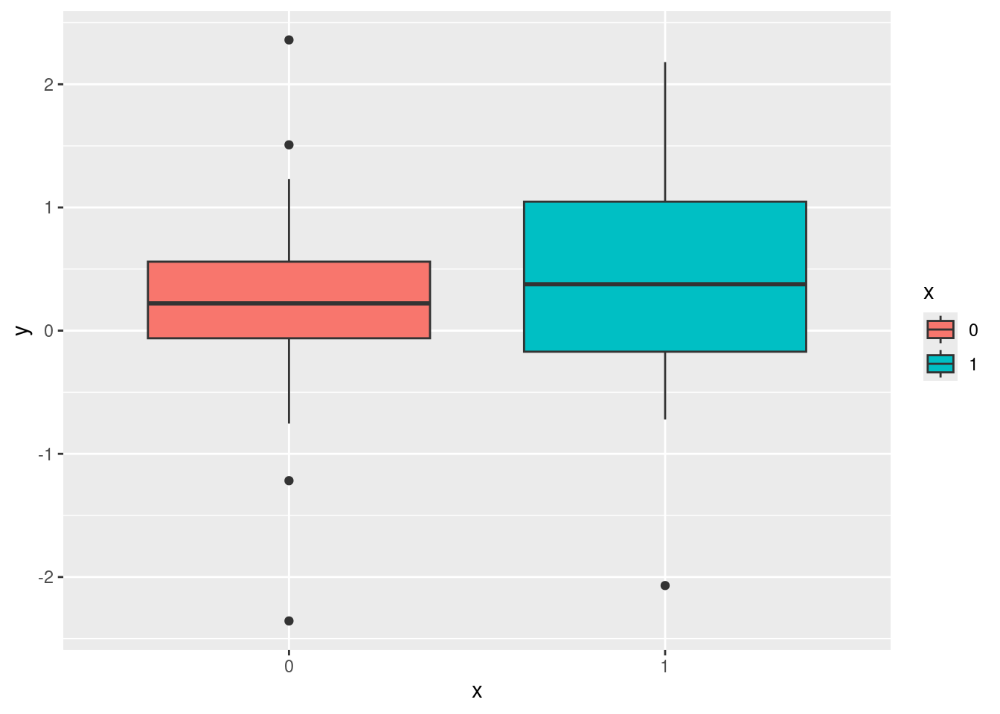
Now we can simply iterate the process for \(R\) studies to create a series of replications with a common true parameter \(\mu_{\theta}\). We can also generate a set of different sample sizes by sampling from a probability distribution (e.g., Poisson). Then, if we want to include variability in the true effects (as would be expected in the case of extensions of an experinent), we can sample \(R\) effects from, say, a normal distribution with variance \(\tau^2\).
R <- 10
mu <- 0.3 # average true effect
tau2 <- 0.1 # heterogeneity
deltai <- rnorm(R, mu, sqrt(tau2)) # true effects for R studies
yi <- vi <- rep(NA, R)
n0 <- n1 <- 10 + rpois(R, 40 - 10)
for(i in 1:R){
y0 <- rnorm(n0[i], 0, 1)
y1 <- rnorm(n1[i], deltai[i], 1)
yi[i] <- mean(y1) - mean(y0)
vi[i] <- var(y1)/n1[i] + var(y0)/n0[i]
}
sim <- data.frame(id = 1:R, yi, vi, n0, n1)
sim id yi vi n0 n1
1 1 0.48028849 0.07186486 30 30
2 2 -0.09665809 0.04782403 38 38
3 3 0.35324118 0.06579169 29 29
4 4 -0.07702323 0.05382421 40 40
5 5 -0.13602413 0.05129676 47 47
6 6 0.08043836 0.03698153 43 43
7 7 0.13757072 0.03872013 44 44
8 8 0.96331420 0.04830064 37 37
9 9 0.52297997 0.04848564 38 38
10 10 0.94638007 0.06902613 33 33Here, we put everything into a single function, which can be used to simulate different scenarios.
sim_study <- function(theta, n0, n1 = NULL, id = NULL){
if(is.null(n1)) n1 <- n0
y0 <- rnorm(n0, 0, 1)
y1 <- rnorm(n1, theta, 1)
sim <- data.frame(
yi = mean(y1) - mean(y0),
vi = var(y1)/n1 + var(y0)/n0
)
sim$sei <- sqrt(sim$vi)
sim$n0 <- n0
sim$n1 <- n1
if(!is.null(id)){
sim <- cbind(id = id, sim)
}
class(sim) <- c("rep3data", class(sim))
return(sim)
}
sim_studies <- function(R, mu = 0, tau2 = 0, n0, n1 = NULL){
# check input parameters consistency
if(length(mu) == 1) mu <- rep(mu, R)
if(length(n0) == 1) n0 <- rep(n0, R)
if(length(n1) == 1) n1 <- rep(n1, R)
if(is.null(n1)) n1 <- n0
deltai <- rnorm(R, 0, sqrt(tau2))
mu <- mu + deltai
sim <- mapply(sim_study, mu, n0, n1, SIMPLIFY = FALSE)
sim <- do.call(rbind, sim)
sim <- cbind(id = 1:R, sim)
class(sim) <- c("rep3data", class(sim))
return(sim)
}sim_studies(R = 10, mu = 0.5, tau2 = 0, n0 = 30) id yi vi sei n0 n1
1 1 0.73346786 0.06939759 0.2634342 30 30
2 2 0.12739199 0.05924995 0.2434131 30 30
3 3 0.26911091 0.06295699 0.2509123 30 30
4 4 0.06089035 0.07242114 0.2691118 30 30
5 5 0.37396961 0.06160821 0.2482100 30 30
6 6 0.20731260 0.04404100 0.2098595 30 30
7 7 0.29403998 0.06482842 0.2546143 30 30
8 8 0.48189905 0.05869047 0.2422612 30 30
9 9 0.47577042 0.09434638 0.3071586 30 30
10 10 0.53507650 0.07269406 0.2696184 30 304.4 Methods
The database available at the following link http://rachelheyard.com/reproducibility_metrics/ can be consulted for a more complete overview. Among all the available methods, we have selected the following metrics1, each of which will be illustrated below, with suitable examples.
- Prediction interval: is the replication effect inside the original 95% prediction interval?
- Proportion of population effects agreeing in direction with the original (vote counting)
- Confidence interval (CI): original effect in replication 95% CI
- Confidence interval (CI): replication effect in original 95% CI
- Prediction interval (CI): replication effect in original 95% PI
- Replication Bayes Factor (BF)
- Small Telescopes
- Consistency of original with replications, \(P_{\mbox{orig}}\)
- Proportion of population effects agreeing in direction with the original, \(\hat{P}_{>0}\)
- Meta-analysis and \(Q\) statistics
4.5 Vote Counting based on significance or direction
The simplest method is called vote counting (Hedges & Olkin, 1980; Valentine et al., 2011). A replication attempt \(\theta_{r}\) is considered to be successful if the result is is statistically significant i.e., \(p_{\theta_{r}} \leq \alpha\) and has the same direction as the original study \(\theta_{0}\). Similarly, we can count the number of replications with the same sign as the original study. This method has the following pros and cons.
- Easy to understand, communicate and compute
- Does not consider the size of the effect
- Depends on the power of \(\theta_{rep}\)
Here is an example which illustrates the vote counting method First, we simulate a replication:
## original study
n_orig <- 30
theta_orig <- theta_from_z(2, n_orig)
orig <- data.frame(
yi = theta_orig,
vi = 4/(n_orig*2)
)
orig$sei <- sqrt(orig$vi)
orig <- summary_es(orig)
orig yi vi sei zi pval ci.lb ci.ub
1 0.5163978 0.06666667 0.2581989 2 0.04550026 0.01033725 1.022458## replications
R <- 10
reps <- sim_studies(R = R,
mu = theta_orig,
tau2 = 0,
n_orig)
reps <- summary_es(reps)
head(reps) id yi vi sei n0 n1 zi pval ci.lb
1 1 0.4010531 0.07664786 0.2768535 30 30 1.4486111 0.1474462075 -0.1415698
2 2 0.2329089 0.06470826 0.2543782 30 30 0.9156010 0.3598762109 -0.2656632
3 3 0.2925283 0.06973105 0.2640664 30 30 1.1077831 0.2679555037 -0.2250323
4 4 0.8481431 0.05533669 0.2352375 30 30 3.6054755 0.0003115819 0.3870860
5 5 0.5576306 0.05370252 0.2317380 30 30 2.4062971 0.0161151534 0.1034324
6 6 0.2115732 0.05091177 0.2256364 30 30 0.9376734 0.3484122558 -0.2306659
ci.ub
1 0.9436759
2 0.7314810
3 0.8100889
4 1.3092002
5 1.0118288
6 0.6538124Then, we compute the proportions of replication studies that are statistically significant:
mean(reps$pval <= 0.05)[1] 0.4And, the proportions of replication studies with the same sign as the original:
At this stage, we could also perform some statistical tests in order to complement the vote counting approach. See Bushman & Wang (2009) and Hedges & Olkin (1980) for vote-counting methods in meta-analysis.
Here is an extreme example:
Imagine an original experiment with \(n_{0} = 30\) and \(\hat \theta_{0} = 0.5\) that is statistically significant \(p \approx 0.045\). Now, consider a direct replication study (thus assume \(\tau^2 = 0\)) with \(n_{1} = 350\) which found \(\hat \theta_{1} = 0.15\), which is statistically significant at \(p\approx 0.047\).
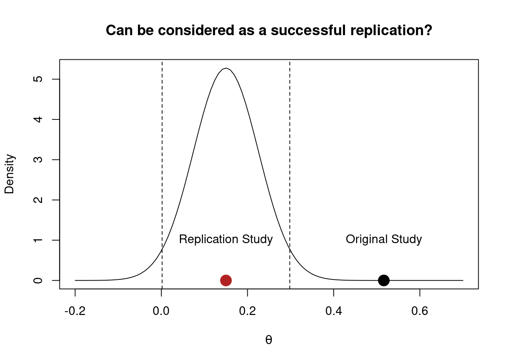
The most problematic aspect of using only the information about the sign of the effect (or the p value) is that we lose information about the size of the effect and the precision.
4.6 Confidence/prediction interval methods
An advantage of confidence/prediction interval methods is that they take into account the size of the effect and the precision. The confidence interval represents the sampling uncertainty around the estimated value. It is interpreted as the proportion of confidence intervals (under hypothetical repetition of the same sampling procedure) which contain the true value.
The confidence interval around an estimated effect \(\theta_r\) can be written as follows:
\[ 95\%\;\mbox{CI} = \hat\theta_r \pm t_{\alpha}\sqrt{\sigma^2_{r}} \]
Here, \(t_{\alpha}\) is the critical test statistic for significance level \(\alpha\). This version of the confidence interval is symmetric around the estimated value and its width is a function of the estimation precision.
alpha <- 0.05
n <- c(10, 50, 100, 500)
theta <- rep(0.3, length(n))
se <- sqrt(1/n + 1/n)
tc <- abs(qnorm(alpha/2))
lb <- theta - se * tc
ub <- theta + se * tc
plot(n, theta, ylim = c(min(lb), max(ub)), type = "b", pch = 19,
xlab = "Sample Size",
ylab = latex2exp::TeX("$\\theta\\;_{r}$"))
lines(n, ub, lty = "dashed")
lines(n, lb, lty = "dashed")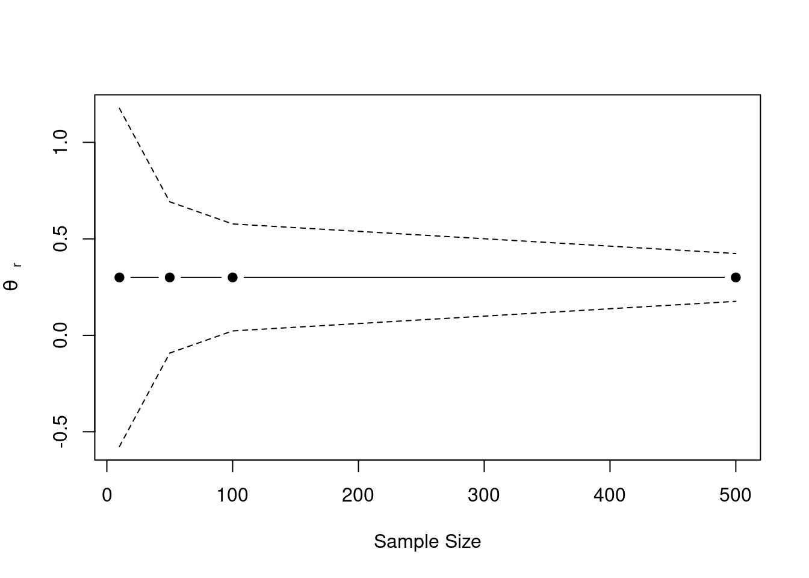
4.6.1 Replication effect within the original CI
We can check whether a replication effect falls within the original study’s confidence interval. That is, whether the following inequalities are satisfied.
\[ \theta_{0} - t_{\alpha} \sqrt{\sigma^2_{0}} < \theta_{r} < \theta_{0} + t_{\alpha} \sqrt{\sigma^2_{0}} \]
The pros and cons of this approach include:
- Takes into account the size of the effect and the precision of \(\theta_{0}\)
- Assumes the original study provides a reliable estimate
- Has no extension for many-to-one designs
- Original studies with limited precision will tend to lead to higher success rates (i.e., original studies with wide intervals will be easier to replicate)
z_orig <- 2
n_orig <- 30
theta_orig <- theta_from_z(z_orig, n_orig)
n_rep <- 350
theta_rep <- 0.15
se_orig <- sqrt(4 / (2 * n_orig))
ci_orig <- theta_orig + qnorm(c(0.025, 0.975)) * se_orig
curve(dnorm(x, theta_orig, se_orig),
-1, 2,
ylab = "Density",
xlab = latex2exp::TeX("$\\theta$"))
abline(v = ci_orig, lty = "dashed")
points(theta_orig, 0, pch = 19, cex = 2)
points(theta_rep, 0, pch = 19, cex = 2, col = "firebrick")
legend("topleft",
legend = c("Original", "Replication"),
fill = c("black", "firebrick"))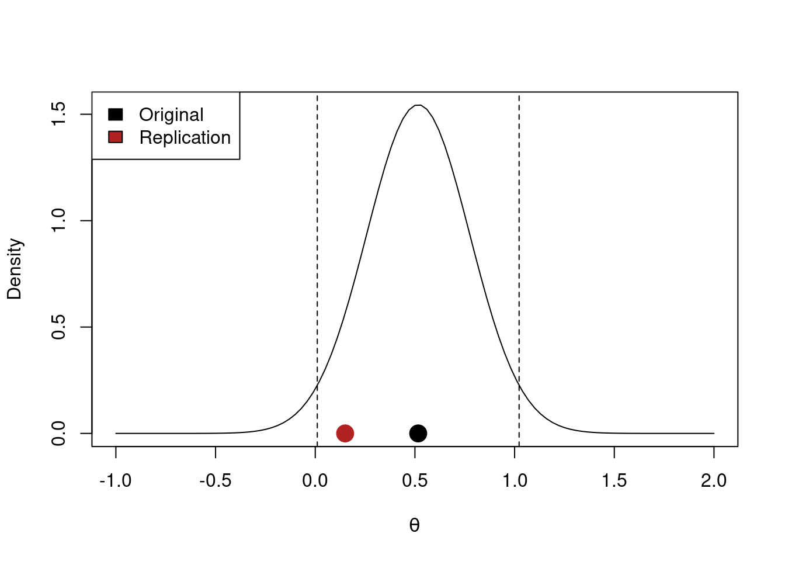
Here is an illustration of the last con of this method (i.e., that original studies with wide intervals will be easier to replicate).
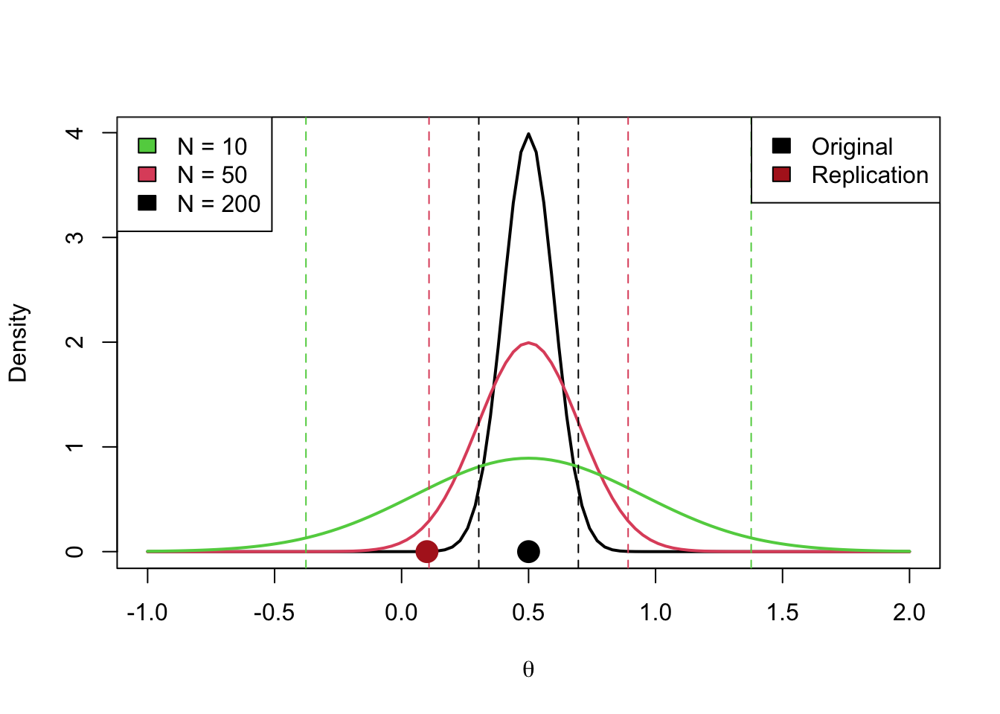
4.6.2 Original study within replication CI
A similar approach is checking whether the original effect size is contained within the replication confidence interval, i.e., whether the following inequalities are satisfied.
\[ \theta_{r} - t_{\alpha} \sqrt{\sigma_{r}^2} < \theta_{0} < \theta_{r} + t_{\alpha} \sqrt{\sigma_{r}^2} \]
This method has the same pros and cons as the previous approach. One advantage of this method is that replication studies are usually more precise (because they tend to have higher sample sizes). As a result, the parameter and the %CI tends to be more reliable.
4.7 Prediction interval PI
The CI methods described so far only take into account uncertainty from either the original or the replication study. The prediction interval PI allows us to account for uncertainty regarding a future observation (in this case, a future study).
If we compute the difference between the original and the replication study, the sampling distribution of the difference represents the range of values that are expected in the absence of other sources of variability. In other words, assuming that \(\tau^2 = 0\).
If the original and replication studies come from the same population, the sampling distribution of the difference is centered on zero with a certain standard error \(\theta_{0} - \theta_{r} \sim \mathcal{N}\left(0, \sqrt{\sigma^2_{\hat \theta_{0} - \hat \theta_{r}}} \right)\) (the subscript \(0\) is to indicate that the effect is expected to be sampled from the same population as \(\theta_{0}\))
\[ \hat \theta_{0} \pm t_{\alpha} \sqrt{\sigma^2_{\theta_{0} - \theta_{r}}} \]
The new standard error is the sum (assuming that the two studies are independent) of the two standard errors. Thus, we are taking into account the estimation uncertainty of the original and replication studies.
set.seed(2025)
o1 <- rnorm(50, 0.5, 1) # group 1
o2 <- rnorm(50, 0, 1) # group 2
od <- mean(o1) - mean(o2) # effect size
se_o <- sqrt(var(o1)/50 + var(o2)/50) # standard error of the difference
n_r <- 100 # sample size replication
se_o_r <- sqrt(se_o^2 + (var(o1)/100 + var(o2)/100))
od + qnorm(c(0.025, 0.975)) * se_o_r[1] 0.325520 1.298378Code
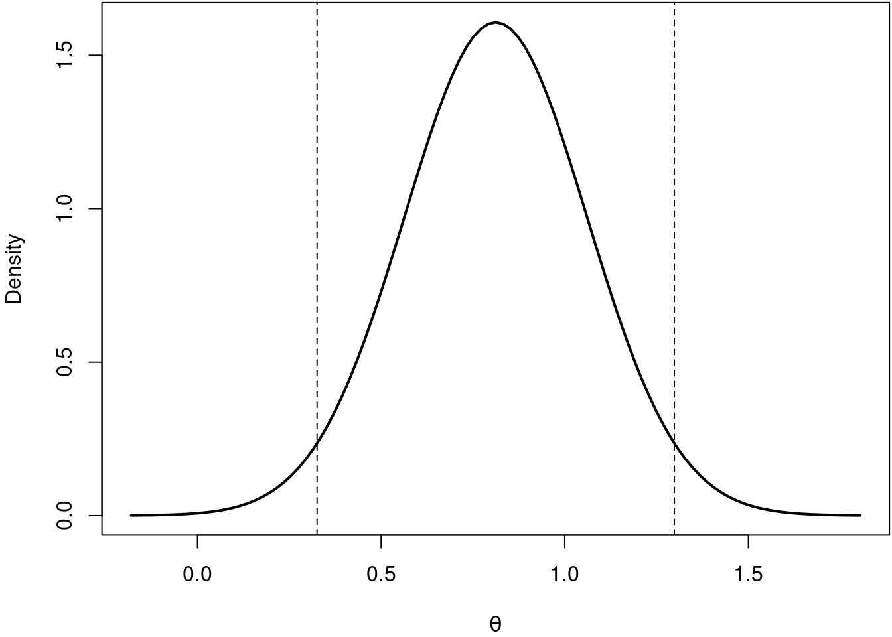
The pros and cons of this method include:
- Takes into account uncertainty in both studies
- Allows us to plan a replication using the standard deviation of the original study and the expected sample size of the replication study
- Low precision in original studies leads to wider PI. For a replication study, it is difficult to fall outside the PI
- Mainly useful for one-to-one replication designs
4.8 Mathur & VanderWeele (2020) \(p_{orig}\)
Mathur & VanderWeele (2020) proposed a new method based on the prediction interval to calculate a p value \(p_{orig}\) representing the probability that \(\theta_{0}\) is consistent with the replications. This method is suited for many-to-one replication designs. Formally:
\[ p_{orig} = 2 \left[ 1 - \Phi \left( \frac{|\hat \theta_{0} - \hat \mu_{\theta_{R}}|}{\sqrt{\hat \tau^2 + \sigma^2_{\theta_{0}} + \hat{SE}^2_{\hat \mu_{\theta_{R}}}}} \right) \right] \]
- \(\hat \mu_{\theta_{R}}\) is the pooled (i.e., meta-analytic) estimation of the \(k\) replications
- \(\tau^2\) is the variance of effects across replications (i.e., heterogeneity)
\(p_{orig}\) is interpreted as the probability that \(\theta_{0}\) is at least as extreme as what is observed. A low \(p_{orig}\) suggests that the original study is inconsistent with replications. This method as three key pros.
- Suited for many-to-one designs
- Takes into account all sources of uncertainty
- Provides a p-value (to gauge consistency of the original study with replications)
The code for this approach is implemented in the Replicate and MetaUtility R packages:
tau2 <- 0.05
theta_rep <- 0.2
theta_orig <- 0.7
n_orig <- 30
n_rep <- 100
k <- 20
replications <- sim_studies(k, theta_rep, tau2, n_rep, n_rep)
original <- sim_studies(1, theta_orig, 0, n_orig, n_orig)
fit_rep <- metafor::rma(yi, vi, data = replications) # random-effects meta-analysis
Replicate::p_orig(original$yi, original$vi, fit_rep$b[[1]], fit_rep$tau2, fit_rep$se^2)[1] 0.066927864.8.1 Simulation
# standard errors assuming same n and variance 1
se_orig <- sqrt(4/(n_orig * 2))
se_rep <- sqrt(4/(n_rep * 2))
se_theta_rep <- sqrt(1/((1/(se_rep^2 + tau2)) * k)) # standard error of the random-effects estimate
sep <- sqrt(tau2 + se_orig^2 + se_theta_rep^2) # z of p-orig denominator
curve(dnorm(x, theta_rep, sep), theta_rep - 4*sep, theta_rep + 4*sep, ylab = "Density", xlab = latex2exp::TeX("\\theta"))
points(theta_orig, 0.02, pch = 19, cex = 2)
abline(v = qnorm(c(0.025, 0.975), theta_rep, sep), lty = "dashed", col = "firebrick")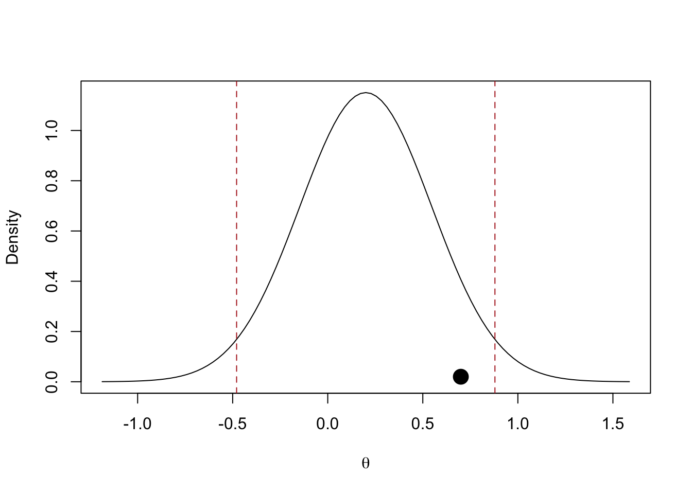
4.8.2 Mathur & VanderWeele (2020) \(\hat P_{> 0}\)
Another related metric is the \(\hat P_{> 0}\), which represents the proportion of replications having the same direction as the original effect. Note: before computing the proportions, they adjust the estimated \(\theta_{r}\) (\(r = 1, \dots, R\)) with a shrinkage factor (to account for regression to the mean):
\[ \tilde{\theta}_{r} = (\theta_{r} - \mu_{\theta_{r}}) \sqrt{\frac{\hat \tau^2}{\hat \tau^2 + \sigma^2_{r}}} \]
Here \(\sigma^2_r\) is the sampling variance for the replication effect size \(r\). This method is similar to vote counting; but, we are adjusting the effects with a shrinkage factor based on \(\tau^2\).
# compute calibrated estimation for the replications
# use restricted maximum likelihood to estimate tau2 under the hood
theta_sh <- MetaUtility::calib_ests(replications$yi, replications$sei, method = "REML")
mean(theta_sh > 0)[1] 0.85The authors suggest a bootstrapping approach for inference on \(\hat P_{> 0}\)
nboot <- 1e3
theta_boot <- matrix(0, nrow = nboot, ncol = k)
for(i in 1:nboot){
idx <- sample(1:nrow(replications), nrow(replications), replace = TRUE)
replications_boot <- replications[idx, ]
theta_cal <- MetaUtility::calib_ests(replications_boot$yi,
replications_boot$sei,
method = "REML")
theta_boot[i, ] <- theta_cal
}
# calculate
p_greater_boot <- apply(theta_boot, 1, function(x) mean(x > 0))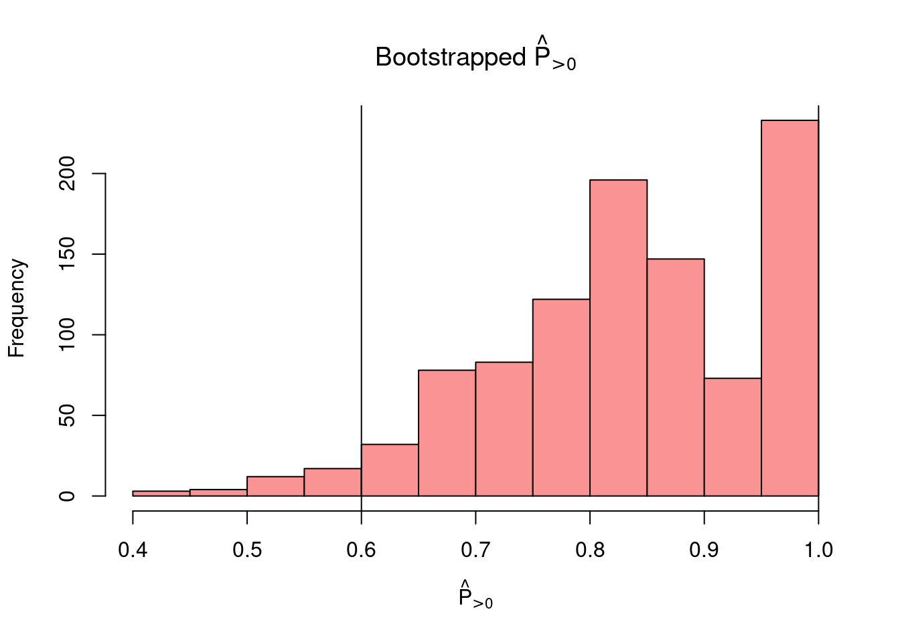
4.8.3 Mathur & VanderWeele (2020) \(\hat P_{\gtrless q*}\)
Instead of using 0 as threshold, we can use a practically meaningful effect size, considered to be low but different from 0. \(\hat P_{\gtrless q*}\) is the proportion of (calibrated) replications greater or lower than the \(q*\) value. This framework is similar to equivalence and minimum effect size testing (Lakens et al., 2018).
q <- 0.2 # minimum non zero effect
fit <- metafor::rma(yi, vi, data = replications)
# see ?MetaUtility::prop_stronger
MetaUtility::prop_stronger(q = q,
M = fit$b[[1]],
t2 = fit$tau2,
tail = "above",
estimate.method = "calibrated",
ci.method = "calibrated",
dat = replications,
yi.name = "yi",
vi.name = "vi") est se lo hi bt.mn shapiro.pval
1 0.35 0.1756669 0 0.6 0.35375 0.81370444.9 Meta-analytic methods
Another approach is to combine the original and replication results using a meta-analysis model. This is applicable to both one-to-one and many-to-one designs. In this case, we can test whether the pooled estimate is different from 0 (or another practically relevant value). The meta-analytic approach has the following pros and cons.
- Uses all the available information, especially when fitting a random-effects model
- Takes into account the precision of individual studies (e.g., via inverse-variance weighting)
- Does not take into account publication bias
- For one-to-one designs, only a fixed-effects model can be used
4.9.1 Fixed-effects Model
# fixed-effects
fit_fixed <- rma(yi, vi, method = "FE")
summary(fit_fixed)
Fixed-Effects Model (k = 20)
logLik deviance AIC BIC AICc
20.7415 -0.0000 -39.4829 -38.4872 -39.2607
I^2 (total heterogeneity / total variability): 0.00%
H^2 (total variability / sampling variability): 0.00
Test for Heterogeneity:
Q(df = 19) = 0.0000, p-val = 1.0000
Model Results:
estimate se zval pval ci.lb ci.ub
0.2000 0.0316 6.3246 <.0001 0.1380 0.2620 ***
---
Signif. codes: 0 '***' 0.001 '**' 0.01 '*' 0.05 '.' 0.1 ' ' 14.9.2 Random-Effects model
# fixed-effects
fit_random <- rma(yi, vi, method = "REML")
summary(fit_random)
Random-Effects Model (k = 20; tau^2 estimator: REML)
logLik deviance AIC BIC AICc
19.7044 -39.4088 -35.4088 -33.5199 -34.6588
tau^2 (estimated amount of total heterogeneity): 0 (SE = 0.0065)
tau (square root of estimated tau^2 value): 0
I^2 (total heterogeneity / total variability): 0.00%
H^2 (total variability / sampling variability): 1.00
Test for Heterogeneity:
Q(df = 19) = 0.0000, p-val = 1.0000
Model Results:
estimate se zval pval ci.lb ci.ub
0.2000 0.0316 6.3246 <.0001 0.1380 0.2620 ***
---
Signif. codes: 0 '***' 0.001 '**' 0.01 '*' 0.05 '.' 0.1 ' ' 14.9.3 Pooling replications
The previous approach can also incorporate the combination/pooling of replications into a single effect (then comparing the original study and the combined/pooled replication study).
This is similar to using the CI or PI approaches; but, the replication effect is likely to be more precise, since we are pooling multiple replication studies.
4.9.4 The Q Statistic
An interesting proposal involves the use of the Q statistic (Hedges & Schauer, 2019a, 2019b, 2019c, 2021; Schauer, 2022; Schauer & Hedges, 2020; Schauer & Hedges, 2021), which is commonly applied in meta-analysis to assess the presence of heterogeneity. Formally:
\[ Q = \sum_{r = 0}^{R} \frac{(\theta_r - \bar \theta_R)^2}{\sigma^2_r} \]
where \(\bar \theta_R\) is the inverse-variance weighted average (e.g., from a fixed-effect model). The \(Q\) statistic is a weighted sum of squares. Under the null hypothesis where all studies are equal \(\theta_0 = \theta_1, ... = \theta_R\), the \(Q\) statistic has a \(\chi^2\) distribution with \(R - 1\) degrees of freedom. Under the alternative hypothesis the distribution is a non-central \(\chi^2\) with non centrality parameter \(\lambda\). The expected value of \(Q\) is \(E(Q) = \nu + \lambda\), where \(\nu\) are the degrees of freedom.
Hedges & Schauer proposed the use of \(Q\) to evaluate the consistency of a series of replications:
- In case of a replication, \(\lambda = 0\) because \(\theta_0 = \theta_1, ... = \theta_R\).
- In case of an extension, \(\lambda < \lambda_0\) where \(\lambda_0\) is the maximum value considered equivalent to zero. In other words, \(\lambda_0\) is the threshold above which the variability is too high to be considered negligible for a replication (in the sense of Machery, 2020).
This approach is testing the consistency (i.e., homogeneity) of replications. A successful replication should minimize the heterogeneity and the presence of a significant \(Q\) statistic would suggest a failed replication attempt. Hedges & Schauer (2019a) and Mathur & VanderWeele (2019) discuss this approach in detail. Their discussion addresses various issues surrounding the proper use of this method, including:
- variations of the apporoach, which cover different replication setups (burden of proof on replicating vs non-replicating, many-to-one and one-to-one, etc.)
- the choice (and interpretation) of the \(\lambda_0\) parameter
- evaluating the power and statistical properties under different replication scenarios
When evaluating a replication, we can use the Qrep() function which calculates the p-value based on the Q sampling distribution.
Qrep <- function(yi, vi, lambda0 = 0, alpha = 0.05){
fit <- metafor::rma(yi, vi)
k <- fit$k
Q <- fit$QE
df <- k - 1
Qp <- pchisq(Q, df = df, ncp = lambda0, lower.tail = FALSE)
pval <- ifelse(Qp < 0.001, "p < 0.001", sprintf("p = %.3f", Qp))
lambda <- ifelse((Q - df) < 0, 0, (Q - df))
res <- list(Q = Q, lambda = lambda, pval = Qp, df = df, k = k, alpha = alpha, lambda0 = lambda0)
H0 <- ifelse(lambda0 != 0, paste("H0: lambda <", lambda0), "H0: lambda = 0")
title <- ifelse(lambda0 != 0, "Q test for Approximate Replication", "Q test for Exact Replication")
cli::cli_rule()
cat(cli::col_blue(cli::style_bold(title)), "\n\n")
cat(sprintf("Q = %.3f (df = %s), lambda = %.3f, %s", res$Q, res$df, lambda, pval), "\n")
cat(H0, "\n")
cli::cli_rule()
class(res) <- "Qrep"
invisible(res)
}Q test for Exact Replication
Q = 509.539 (df = 99), lambda = 410.539, p < 0.001
H0: lambda = 0 Qres <- Qrep(dat$yi, dat$vi)Q test for Exact Replication
Q = 509.539 (df = 99), lambda = 410.539, p < 0.001
H0: lambda = 0 plot.Qrep(Qres)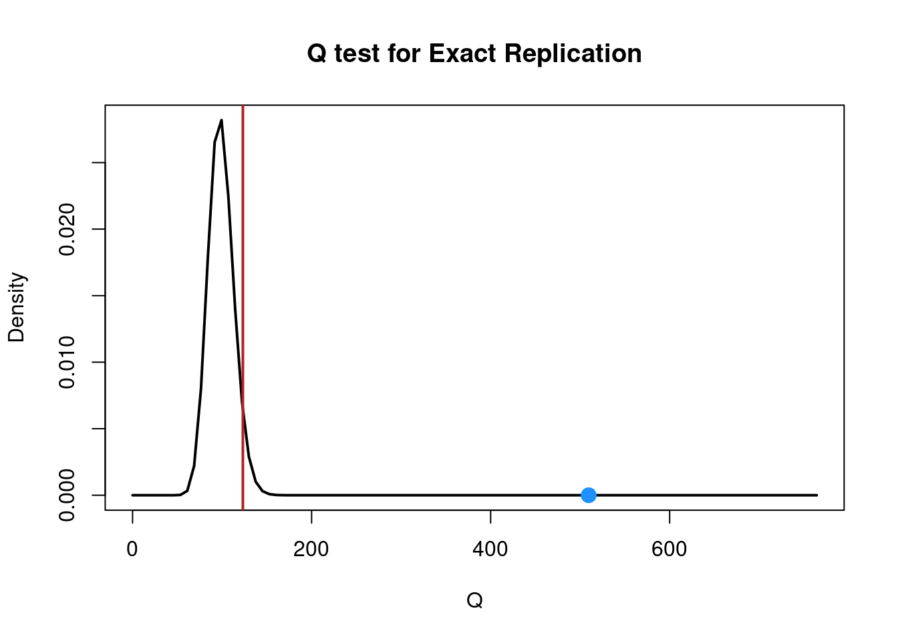
4.9.4.1 Q Statistic for an extension study
In the case of an extension of an intial experiment, we will need to set \(\lambda_0\) to a meaningful value. The critical \(Q\) is no longer evaluated with a central \(\chi^2\) but is now a non-central \(\chi^2\) with non-centrality parameter \(\lambda_0\).
Hedges & Schauer (2019c) provide different strategies for choosing \(\lambda_0\). They found that (under some mild assumptions), \(\lambda = (R - 1) \frac{\tau^2}{\tilde{v}}\) seems to be a suitable choice.
Similarly to a meta-analysis, in a many-to-one replication design we have mainly two sources of variability: the true heterogeneity \(\tau^2\) and the within-studies veriability \(\sigma_i^2\). The sum of these two quantities is the total variability and the proportion of total variability due to heterogeneity is a relative index of (in)consistency among effects. This proportion is called \(I^2\) (Higgins & Thompson, 2002) in the meta-analysis literature is calculated as: \[ I^2 = 100\% \times \frac{\hat{\tau}^2}{\hat{\tau}^2 + \tilde{v}} \]
Where \(\tilde{v}\) can be considered as a typical within-study variance value.
\[ \tilde{v} = \frac{(k-1) \sum w_i}{(\sum w_i)^2 - \sum w_i^2}, \]
Having introduced the \(I^2\) statistic, we can derive a \(\lambda_0\) based on \(I^2\). Schmidt & Hunter (2014) proposed that when \(\tilde{v}\) is at least 75% of the total variance \(\tilde{v} + \tau^2\), \(\tau^2\) can be considered to be negligible. This corresponds to a \(I^2 = 25%\) and a ratio \(\frac{\tau^2}{\tilde{v}} = 1/3\). Hence, \(\lambda_0 = \frac{(R - 1)}{3}\) can be considered to be a negligible amount of heterogeneity.
k <- 100
dat <- sim_studies(k, 0.5, 0, 50, 50)
Qrep(dat$yi, dat$vi, lambda0 = (k - 1)/3)Q test for Approximate Replication
Q = 93.881 (df = 99), lambda = 0.000, p = 0.989
H0: lambda < 33 4.10 Small Telescopes (Simonsohn, 2015)
The idea is simple but quite powerful and insightful. An original study \(\theta_{0}\) is conducted estimating a certain effect size with a certain sample size. This study has a certain statistical power level assuming a plausible effect size. Then we estimate the effect size that would have a certain low power level (e.g., 33%, \(d_{33\%}\)). Then we run the replication study \(\theta_r\) testing if the replication effect size is lower (one-sided test) than \(d_{33\%}\). If upper bound of the confidence interval of the replication study is lower this means that the original study is probably seriously underpowered suggesting evidence of non-replication.
As a practical example, let’s assume that an original study found an effect of \(\theta_{0} = 0.7\) on a two-sample design with \(n = 20\) per group. We define a threshold as the effect size that is associated with a certain low statistical power level e.g., \(33\%\) given the sample size i.e. \(d_{33\%} = 0.5\). The replication study found an effect of \(\theta_{r} = 0.2\) with \(n = 100\) subjects.
If the \(\theta_{r}\) is statistically significantly lower than \(d_{33\%} = 0.5\) we conclude that the effect is probably so small that could not have been detected by the original study.
We can use the custom small_telescope() function on simulated data:
small_telescope <- function(or_d,
or_se,
rep_d,
rep_se,
small,
ci = 0.95){
# quantile for the ci
qs <- c((1 - ci)/2, 1 - (1 - ci)/2)
# original confidence interval
or_ci <- or_d + qnorm(qs) * or_se
# replication confidence interval
rep_ci <- rep_d + qnorm(qs) * rep_se
# small power
is_replicated <- rep_ci[2] > small
msg_original <- sprintf("Original Study: d = %.3f %s CI = [%.3f, %.3f]",
or_d, ci, or_ci[1], or_ci[2])
msg_replicated <- sprintf("Replication Study: d = %.3f %s CI = [%.3f, %.3f]",
rep_d, ci, rep_ci[1], rep_ci[2])
if(is_replicated){
msg_res <- sprintf("The replicated effect is not smaller than the small effect (%.3f), (probably) replication!", small)
msg_res <- cli::col_green(msg_res)
}else{
msg_res <- sprintf("The replicated effect is smaller than the small effect (%.3f), no replication!", small)
msg_res <- cli::col_red(msg_res)
}
out <- data.frame(id = c("original", "replication"),
d = c(or_d, rep_d),
lower = c(or_ci[1], rep_ci[1]),
upper = c(or_ci[2], rep_ci[2]),
small = small
)
# nice message
cat(
msg_original,
msg_replicated,
cli::rule(),
msg_res,
sep = "\n"
)
invisible(out)
}set.seed(2025)
d <- 0.2 # real effect
# original study
or_n <- 20
or_d <- 0.7
or_se <- sqrt(1/20 + 1/20)
d_small <- pwr::pwr.t.test(or_n, power = 0.33)$d
# replication
rep_n <- 100 # sample size of replication study
g0 <- rnorm(rep_n, 0, 1)
g1 <- rnorm(rep_n, d, 1)
rep_d <- mean(g1) - mean(g0)
rep_se <- sqrt(var(g1)/rep_n + var(g0)/rep_n)Here we are using the pwr::pwr.t.test() to compute the effect size \(\theta_{small}\) (in code d) associated with 33% power.
small_telescope(or_d, or_se, rep_d, rep_se, d_small, ci = 0.95)Original Study: d = 0.700 0.95 CI = [0.080, 1.320]
Replication Study: d = 0.214 0.95 CI = [-0.061, 0.490]
────────────────────────────────────────────────────────────────────────────────
The replicated effect is smaller than the small effect (0.493), no replication!And a plot:
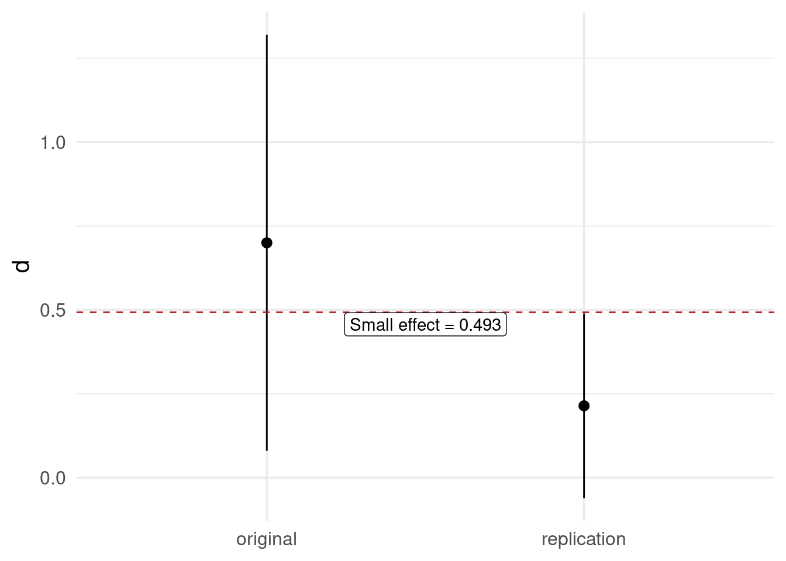
4.11 Replication Bayes factor
Verhagen & Wagenmakers (2014) proposed a method to estimate the evidence of a replication study. The core topics to understand the method are:
- Bayesian hypothesis testing using the Bayes Factor (see, Rouder et al., 2009)
- Bayes Factor using the Savage-Dickey density ratio (SDR, Wagenmakers et al., 2010)
4.11.1 Bayesian inference
Bayesian inference is a statistical procedure where prior beliefs about a phenomenon are combined, using Bayes’s theorem, with evidence from data to obtain posterior beliefs.
If the researcher can express their prior beliefs in probabilistic terms, then evidence from the experiment is taken into account (via Bayesian conditionalization), thus increasing or decreasing the plausibility of prior beliefs.
Let’s consider a simple example. We need to evaluate the fairness of a coin. The parameter is the probability \(\pi\) of success (i.e., heads). We have our prior belief about the coin (e.g., fair but with some uncertainty). We toss the coin \(k\) times, and we observe \(x\) heads. How should we update our prior beliefs? We apply Bayes’s Theorem, which, in this case, is:
\[ p(\pi|D) = \frac{p(D|\pi) \; p(\pi)}{p(D)} \]
Here, \(\pi\) is our parameter and \(D\) is our data. \(p(\pi|D)\) is the posterior distribution, which is the normalized product of \(p(D|\pi)\) — which is called the likelihood of the hypothesis \(\pi\), relative to the data \(D\) — and the prior \(p(\pi)\). \(p(D)\) is the prior probability of the data (aka marginal likelihood) and is necessary for the posterior to be a (proper) probability distribution.
We can “read” the formula as: The probability of the parameter given the data is the product of the probability of the data given the parameter and the prior probability of the parameter.
Let’s express our prior belief in probabilistic terms:
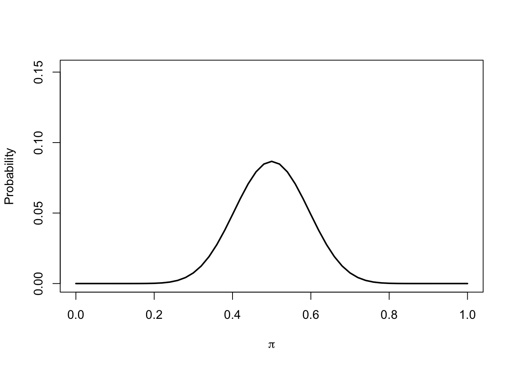
Now we collect data and we observe \(x = 40\) tails out of \(k = 50\) trials thus \(\hat{\pi} = 0.8\) and compute the likelihood:
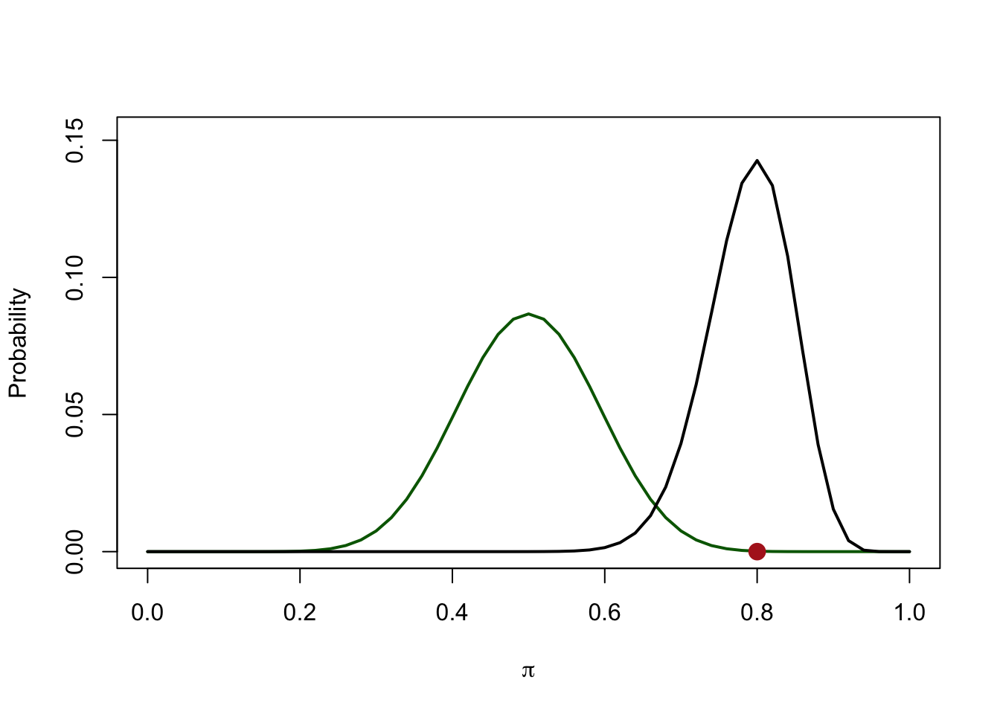
Finally we combine, using the Bayes rule, prior and likelihood to obtain the posterior distribution:
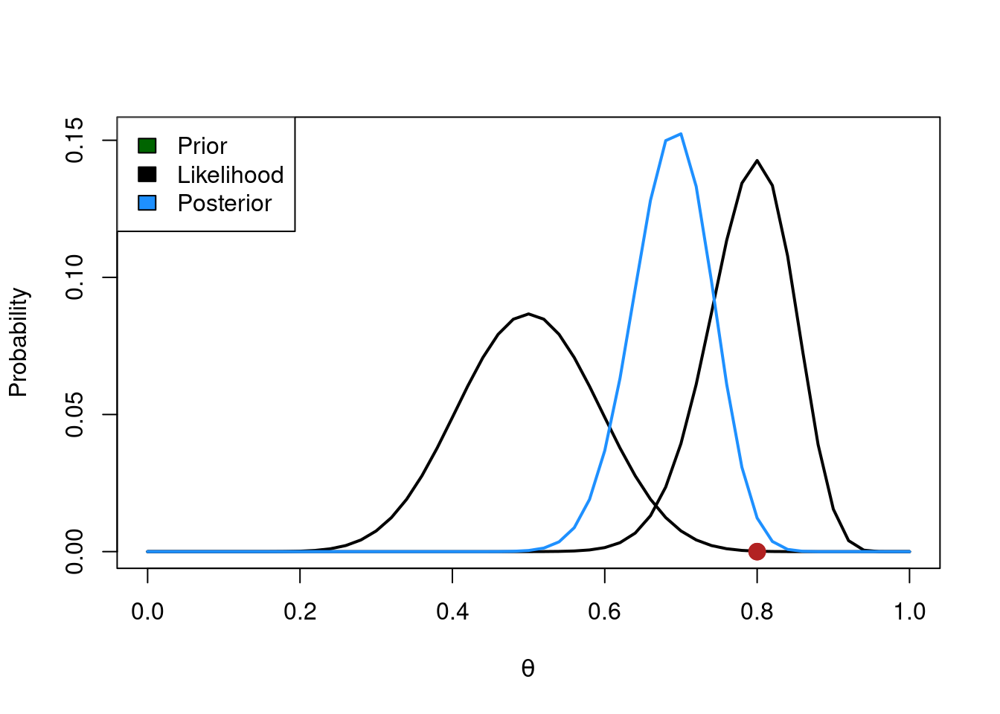
The Bayes Factor (BF) — also called the likelihood ratio, for obvious reasons — is a measure of the relative support that the evidence provides for two competing hypotheses, \(H_0\) and \(H_1\) (~ \(\pi\) in our previous example). It plays a key role in the following odds form of Bayes’s theorem.
\[ \frac{p(H_0|D)}{p(H_1|D)} = \frac{p(D|H_0)}{p(D|H_1)} \times \frac{p(H_0)}{p(H_1)} \]
The ratio of the priors \(\frac{p(H_0)}{p(H_1)}\) is called the prior odds of the hypotheses; and, the ratio of the poosteriors \(\frac{p(H_0| D)}{p(H_1 | D)}\) is called the posterior odds of the hypotheses. Thus, the above (odds form) of Bayes’s Theorem can be paraphrased as follows
\[ \text{posterior odds} = \text{Bayes Factor} \times \text{prior odds} \] In this way, it can be seen that the Bayes Factor captures the relative empirical support that the evidence \(D\) provides in favor of \(H_0\) over \(H_1\). If the Bayes Factor is greater than 1, then \(D\) favors \(H_0\) over \(H_1\). If the BF is less than one, then \(D\) favors \(H_1\) over \(H_0\). If the BF is 1, then \(D\) is neutral regarding \(H_0\) vs \(H_1\) (Royall, 1997). For this reason, the BF is also sometimes called the weight of evidence in favor of \(H_0\) (vs \(H_1\)) (Good, 1950).
4.11.2 Calculating the Bayes Factor using the SDR
The Savage-Dickey density ratio (SDR) is a convenient shortcut to calculate the Bayes Factor (Marin & Robert, 2010; see Wagenmakers et al., 2010) in a situation where the null hypothesis (\(H_0\)) is a single parameter value (e.g., \(H_0: \theta = 0\)). With SDR the Bayes Factor can be calculated as the ratio between the prior and posterior density distribution under the alternative hypothesis \(H_1\).
\[ BF_{01} = \frac{p(D|H_0)}{p(D|H_1)} \approx \frac{p(\pi = x|D, H_1)}{p(\pi = x | H_1)} \]
Where \(\pi\) is the parameter of interest and \(x\) is the null value under \(H_0\) (e.g., 0). and \(D\) are the data.
When there are multiple parameters in play and the null hypothesis is expressed in terms of only one of them, this representation is valid only under the assumption that the prior for any of the other parameters under the null is the same as the conditional prior for those parameters under the alternative.
Following the previous example \(H_0: \pi = 0.5\). Under \(H_1\) we use a vague prior by setting \(\pi \sim Beta(1, 1)\).
Say we flipped the coin 20 times and we found that \(\hat \pi = 0.75\).
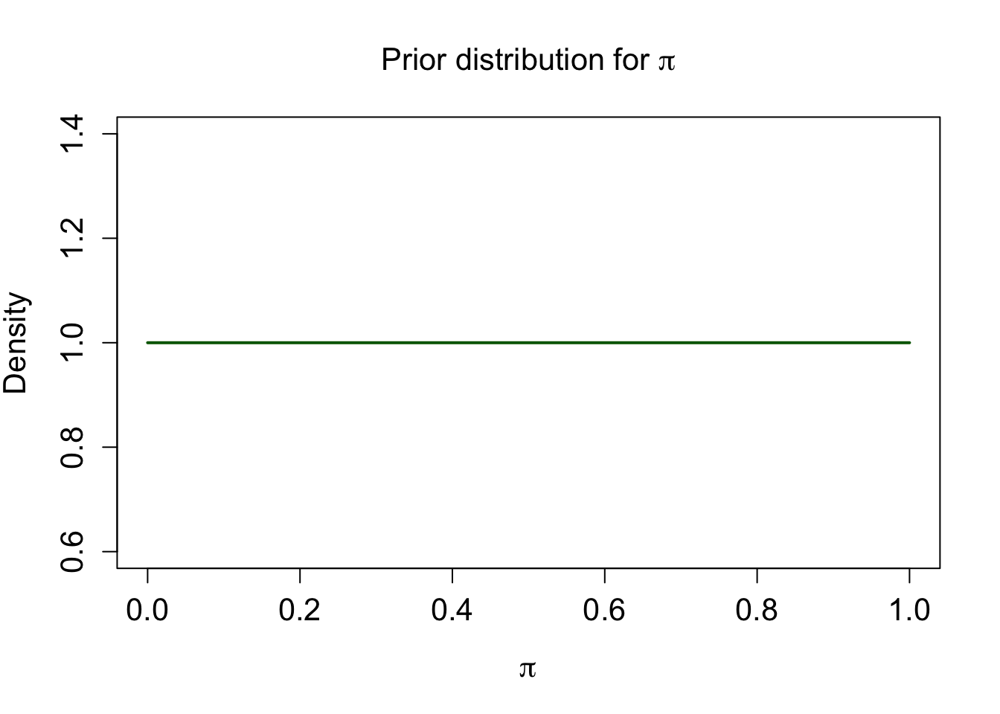
The ratio between the two black dots is the Bayes Factor.
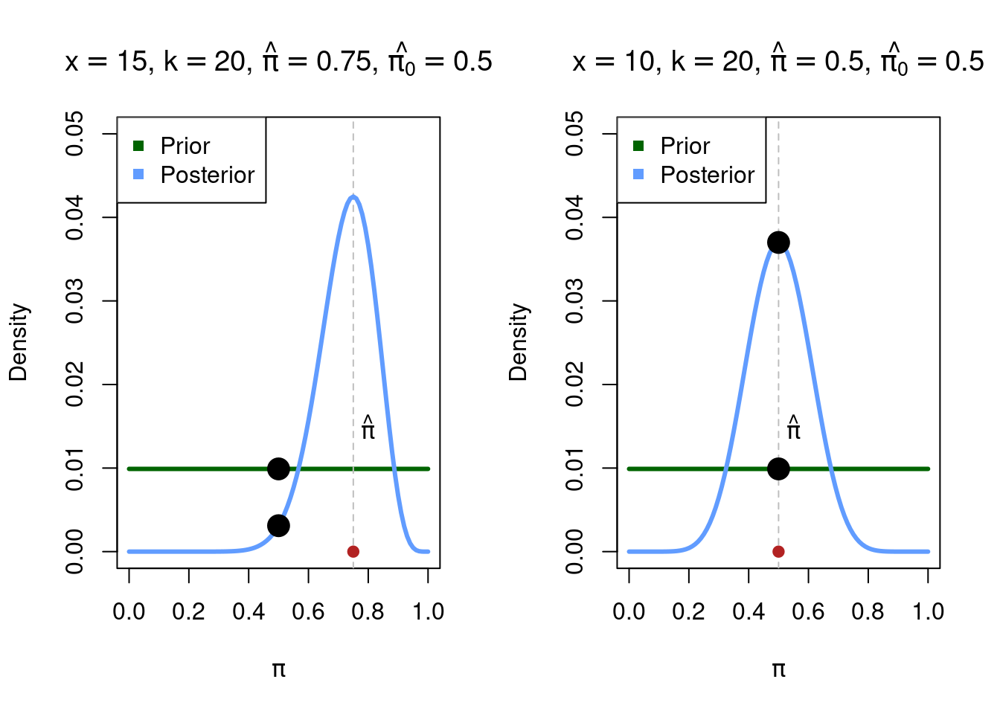
4.11.3 Verhagen & Wagenmakers (2014) model2
The idea is using the posterior distribution of the original study as prior for a Bayesian hypothesis testing where:
- \(H_0: \theta_{r} = 0\) meaning that there is no effect in the replication study
- \(H_1: \theta_{r} \neq 0\) and in particular is distributed as \(\delta \sim \mathcal{N}(\theta_{0}, \sigma^2_{0})\) where \(\theta_{0}\) and \(\sigma^2_{0}\) are the mean and standard error of the original study
If \(H_0\) is more likely after seeing the data, there is evidence against the replication (i.e., \(BF_{r0} > 1\)) otherwise there is evidence for a successful replication (\(BF_{r1} > 1\)).
Disclaimer: The actual implementation of Verhagen & Wagenmakers (2014) is different (they use the \(t\) statistics). We implemented a similar model using a Bayesian linear model with rstanarm.
Let’s assume that the original study (\(n = 30\)) estimates a \(\theta_{0} = 0.4\) and a standard error \(\sigma^2/n\).
# original study
n <- 30
yorig <- 0.4
se <- sqrt(1/n)The assumption of Verhagen & Wagenmakers (2014) is that the original study performed a Bayesian analysis with a flat (unform) prior. Thus, the confidence interval is approximately the same as the Bayesian credible interval.
For this reason, the posterior distribution of the original study can be approximated as:
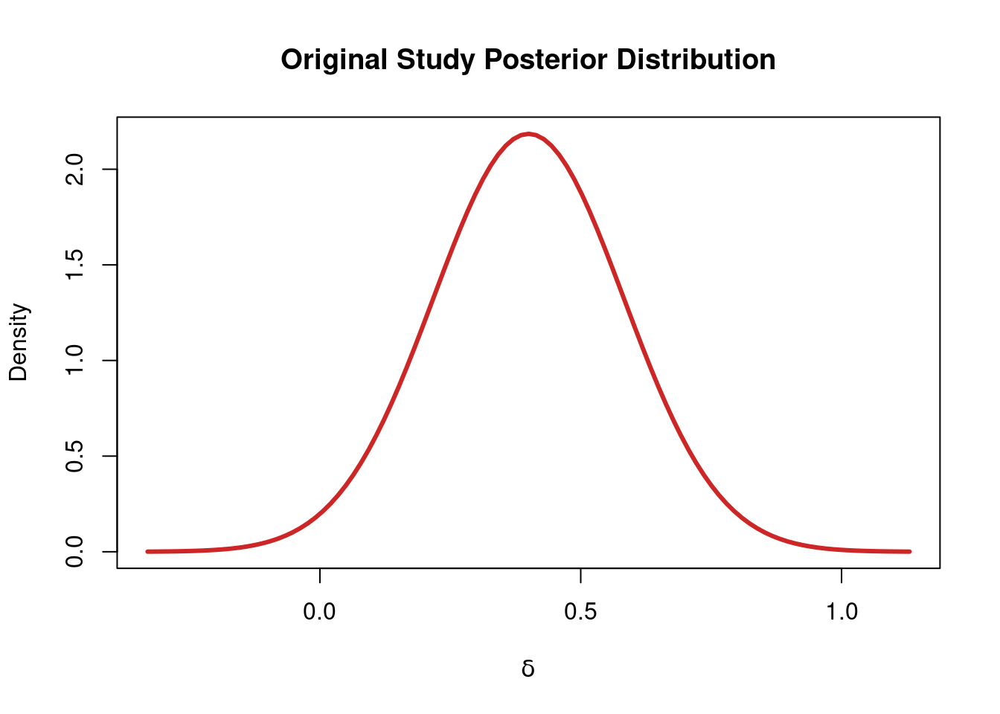
Let’s imagine that a new study tried to replicate the original one. They collected \(n = 100\) participants with the same protocol and found an effect of \(y_{rep} = 0.1\).
nrep <- 100
yrep <- MASS::mvrnorm(nrep, mu = 0.1, Sigma = 1, empirical = TRUE)[, 1]
dat <- data.frame(y = yrep)
hist(yrep, main = "Replication Study (n1 = 100)", xlab = latex2exp::TeX("$\\theta_{r}$"))
abline(v = mean(yrep), lwd = 2, col = "firebrick")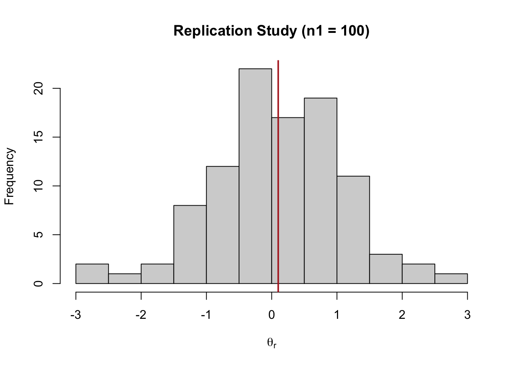
We can analyze these data with an intercept-only regression model setting as prior the posterior distribution of the original study:
# setting the prior on the intercept parameter
prior <- rstanarm::normal(location = yorig,
scale = se)
# fitting the bayesian linear regression
fit <- stan_glm(y ~ 1,
data = dat,
prior_intercept = prior,
refresh = FALSE)
summary(fit)
Model Info:
function: stan_glm
family: gaussian [identity]
formula: y ~ 1
algorithm: sampling
sample: 4000 (posterior sample size)
priors: see help('prior_summary')
observations: 100
predictors: 1
Estimates:
mean sd 10% 50% 90%
(Intercept) 0.2 0.1 0.1 0.2 0.3
sigma 1.0 0.1 0.9 1.0 1.1
Fit Diagnostics:
mean sd 10% 50% 90%
mean_PPD 0.2 0.1 0.0 0.2 0.3
The mean_ppd is the sample average posterior predictive distribution of the outcome variable (for details see help('summary.stanreg')).
MCMC diagnostics
mcse Rhat n_eff
(Intercept) 0.0 1.0 2609
sigma 0.0 1.0 2608
mean_PPD 0.0 1.0 3185
log-posterior 0.0 1.0 1693
For each parameter, mcse is Monte Carlo standard error, n_eff is a crude measure of effective sample size, and Rhat is the potential scale reduction factor on split chains (at convergence Rhat=1).We can use the bayestestR::bayesfactor_pointnull() to calculate the BF using the Savage-Dickey density ratio.
bf <- bayestestR::bayesfactor_pointnull(fit, null = 0)
print(bf)Bayes Factor (Savage-Dickey density ratio)
Parameter | BF
-------------------
(Intercept) | 0.274
* Evidence Against The Null: 0plot(bf)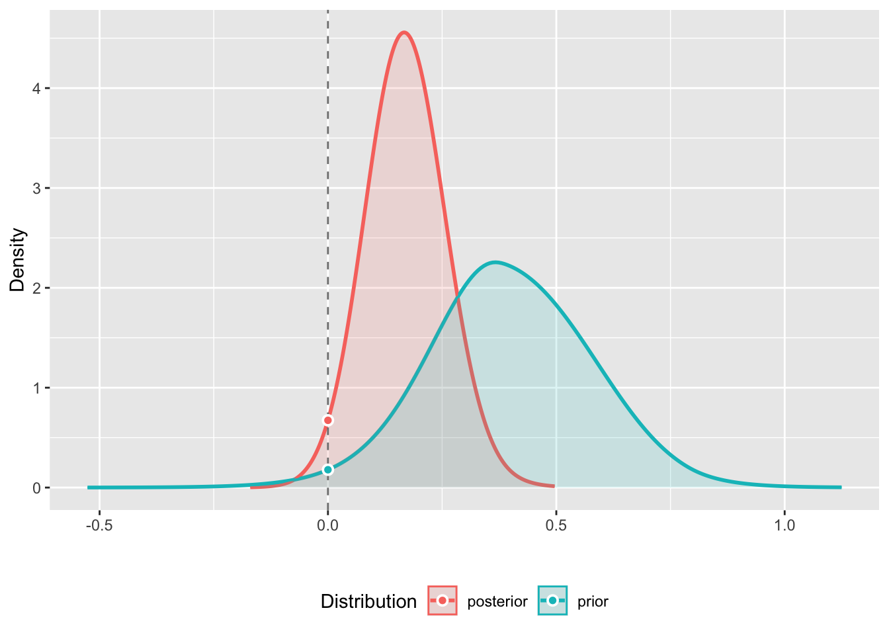
You can also use the bf_replication() function:
bf_replication <- function(mu_original,
se_original,
replication){
# prior based on the original study
prior <- rstanarm::normal(location = mu_original, scale = se_original)
# to dataframe
replication <- data.frame(y = replication)
fit <- rstanarm::stan_glm(y ~ 1,
data = replication,
prior_intercept = prior,
refresh = 0) # avoid printing
bf <- bayestestR::bayesfactor_pointnull(fit, null = 0, verbose = FALSE)
title <- "Bayes Factor Replication Rate"
posterior <- "Posterior Distribution ~ Mean: %.3f, SE: %.3f"
replication <- "Evidence for replication: %3f (log %.3f)"
non_replication <- "Evidence for non replication: %3f (log %.3f)"
if(bf$log_BF > 0){
replication <- cli::col_green(sprintf(replication, exp(bf$log_BF), bf$log_BF))
non_replication <- sprintf(non_replication, 1/exp(bf$log_BF), -bf$log_BF)
}else{
replication <- sprintf(replication, exp(bf$log_BF), bf$log_BF)
non_replication <- cli::col_red(sprintf(non_replication, 1/exp(bf$log_BF), -bf$log_BF))
}
outlist <- list(
fit = fit,
bf = bf
)
cat(
cli::col_blue(title),
cli::rule(),
sprintf(posterior, fit$coefficients, fit$ses),
"\n",
replication,
non_replication,
sep = "\n"
)
invisible(outlist)
}bf_replication(mu_original = yorig, se_original = se, replication = yrep)A better custom plot:
bfplot <- data.frame(
prior = rnorm(1e5, yorig, se),
posterior = rnorm(1e5, fit$coefficients, fit$ses)
)
ggplot() +
stat_function(geom = "line",
aes(color = "Original Study (Prior)"),
linewidth = 1,
alpha = 0.3,
fun = dnorm, args = list(mean = yorig, sd = se)) +
stat_function(geom = "line",
linewidth = 1,
aes(color = "Replication Study (Posterior)"),
fun = dnorm, args = list(mean = fit$coefficients, sd = fit$ses)) +
xlim(c(-0.5, 1.2)) +
geom_point(aes(x = c(0, 0), y = c(dnorm(0, yorig, sd = se),
dnorm(0, fit$coefficients, sd = fit$ses))),
size = 3) +
xlab(latex2exp::TeX("\\delta")) +
ylab("Density") +
theme(legend.position = "bottom",
legend.title = element_blank())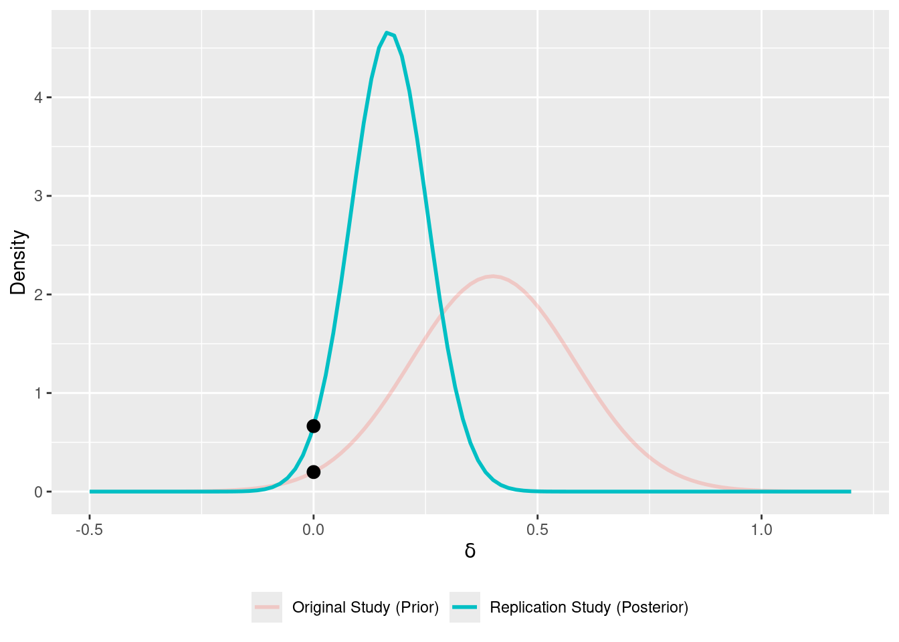
4.12 Conclusions
We hope to have provided a useful overview of statistical approaches to different definitions of replication. The meta-analytic and \(Q\) methods are more focused on accumulating evidence combining original and replication studies. The CI and PI methods are more interested in comparing the original and replication(s) study. The BF method constitutes a kind of compromise between these perspectives, by evaluating the weight of evidence in favor of the null — from the point of view of the posterior distribution of the replication study.